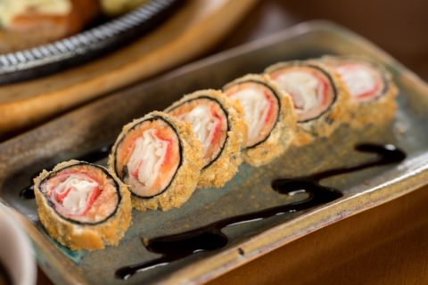
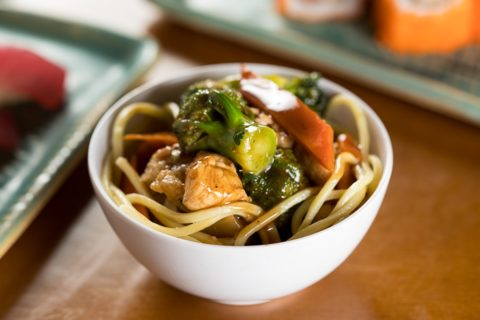
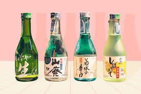
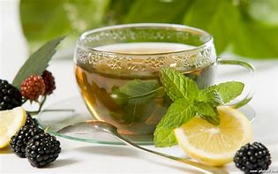

Pratos Quentes
-

Hot roll
Sushi empanado e frito, o hot roll é um prato consumido quente ou frio. É feito com alga, arroz para sushi, salmão e, no Brasil, com um toque de cream cheese. O hot roll ingressou com sucesso no cardápio da comida japonesa, mas é importante lembrar que a invenção vem da Califórnia
R$ 25,00
-

Yakisoba
Muito apreciado pelos conhecedores da culinária oriental, yakissoba (junção de yaki (assar) e soba (macarrão)) é um prato composto por macarrão refogado com legumes e carnes, que podem ser de boi, frango e porco. Aqui no Djapa há três versões do prato, completo (que leva camarão na composição), tradicional e vegetariano.
R$ 20,00 -

TEMAKI
Este cone feito de algas secas e crocantes caiu definitivamente no gosto dos brasileiros. Ele pode trazer os mais diferentes recheios, porém os mais comuns são atum, pepino, kani e salmão cru ou grelhado, todos com arroz. Para acompanhar, molho shoyu. Temaki é um tipo de sushi, sendo que “te” significa “mão” e “maki”, “enrolado”.
R$ 22,00
Sushi e Sashimi
-

Sushi
Esta típica comida japonesa é um bolinho de arroz enrolado com uma alga. O sushi traz diferentes ingredientes em seu interior, entre eles frutos do mar, peixe e vegetais. Como a variedade de sushi é bem grande, a iguaria pode ganhar outros nomes dependendo do recheio escolhido. A título de curiosidade, a palavra sushi significa “é azedo”
R$ 10,00 (por peça) -

Sashimi
O prato traz tiras finas de peixe cru, geralmente salmão, atum e outros peixes. Não é consumido com arroz, mas pode ser acompanhado de alga, molho shoyu e wasabi. Sashimi significa carne perfurada (sashi = perfurada + mi = carne)..
R$ 12,00 (por peça)
Bebidas Tipicas
-

Sake
Bebida alcoólica fermentada de arroz.
R$ 15,00 (garrafa) -

Chá verde
Bebida tradicional japonesa.
R$ 5,00